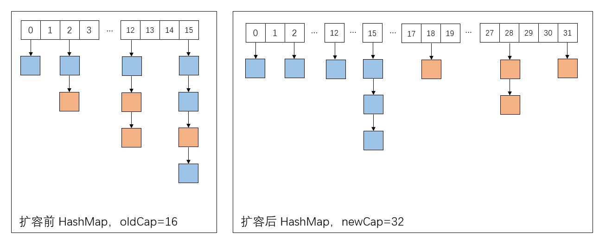

Map简介 Map，即哈希表，也称字典，是一个键值对(Kry-Value)的数据结构，put()和get()函数几乎可以在常数级别内完成，哈希表有两种实现方式，一种被称为开放地址法(open addressing)，另一只被称为冲突链表法（seperate chaining），和之间的分析步骤一样，我们先看一下相关接口的设计，再深入到具体实现类。
1. Map接口 1 2 3 4 5 6 7 8 9 10 11 12 13 14 15 16 17 18 19 20 21 public interface Map <K ,V > int size () boolean isEmpty () boolean containsKey (Object key) boolean containsValue (Object value) V get (Object key) ; default V getOrDefault (Object key, V defaultValue) V put (K key, V value) ; V remove (Object key) ; void putAll (Map<? extends K, ? extends V> m) void clear () Set<K> keySet () ; Collection<V> values () ; Set<Map.Entry<K, V>> entrySet(); }
常用的方法也就是上述的这些，由上述接口我们可以发现，在Map接口中其实还包含了另一个内部接口Map.Entry<K,V>，用来表示一个个键值对。这个Entry<K,V>接口中最关键的方法就是int hashCode(),到时候该键值对放在哪个地方，就是根据这里返回的哈希值来决定的。
在上述方法中还需要注意一个点，那就是Map.values()方法返回的是一个Collection对象，而Map.keys()返回的是一个Set对象，这个也很显然，哈希表中的key是唯一的、不会重复的，而value可以随便是什么值、支持重复。
2. HashMap实现类 这个类可以说是Java中用的最多的集合类之一了，HashMap采用的就是冲突链表法来实现的，一个很好的示意图如下：
常用的例子如下：
1 2 3 4 5 Map<String, Integer> map = new HashMap<>(); map.put("Andy" , 123 ); map.put("Jack" , 333 ); map.put("Rose" , 233 );
HashMap本身的继承和实现关系如下，AbstractMap抽象类中已经为我们已经实现好了一些默认的方法。
1 2 3 4 5 public class HashMap <K ,V > extends AbstractMap <K ,V > implements Map <K ,V >, Cloneable , Serializable { # ... }
2.1 构造函数 首先，我们要知道，HashMap底层实现是按照数组+链表来实现的，我们在源码中可以发现transient Node<K,V>[] table;的存在，其中，每一个数组项，我们称之为桶。与之相关的有个属性叫做loadFactor，当哈希表中的桶的数量超过该装填因子时，会引发扩容，导致哈希表重新哈希。
构造函数有如下4个：
1 2 3 4 5 6 7 8 9 10 11 12 13 14 15 16 17 18 19 20 21 22 23 24 25 26 27 28 29 30 31 32 33 34 35 static final float DEFAULT_LOAD_FACTOR = 0.75f ; static final int MAXIMUM_CAPACITY = 1 << 30 ; int threshold;public HashMap () this .loadFactor = DEFAULT_LOAD_FACTOR; } public HashMap (int initialCapacity) this (initialCapacity, DEFAULT_LOAD_FACTOR); } public HashMap (int initialCapacity, float loadFactor) if (initialCapacity < 0 ) throw new IllegalArgumentException("Illegal initial capacity: " + initialCapacity); if (initialCapacity > MAXIMUM_CAPACITY) initialCapacity = MAXIMUM_CAPACITY; if (loadFactor <= 0 || Float.isNaN(loadFactor)) throw new IllegalArgumentException("Illegal load factor: " + loadFactor); this .loadFactor = loadFactor; this .threshold = tableSizeFor(initialCapacity); } public HashMap (Map<? extends K, ? extends V> m) this .loadFactor = DEFAULT_LOAD_FACTOR; putMapEntries(m, false ); }
这里需要注意的就是tableSizeFor()这个函数，这个函数的作用就是大于或等于输入参数，且最近的2的整数次幂的数 。比如参数为10时，则返回16；参数为4时，返回也是4，其代码如下：
1 2 3 4 5 6 7 8 9 static final int tableSizeFor (int cap) int n = cap - 1 ; n |= n >>> 1 ; n |= n >>> 2 ; n |= n >>> 4 ; n |= n >>> 8 ; n |= n >>> 16 ; return (n < 0 ) ? 1 : (n >= MAXIMUM_CAPACITY) ? MAXIMUM_CAPACITY : n + 1 ; }
这里我感觉怪怪的，this.threshold = tableSizeFor(initialCapacity);这一句是不是有bug呀？比方说，用户指定的capacity为15，tableSizeFor()方法返回一个16，你居然把16赋值给扩容阈值？什么情况？后来，我继续阅读后续源码才发现，此时哈希表的桶其实还没有初始化，即table数组还实际上没有申请内存，这一工作被推迟到了put()函数中，到时候threshold变量会被重新赋值成capacity * loadFactor。这里的位移操作还是很高效的。
2.2 put方法 这里我们需要知道几个点：
在HashMap的底层，是按照数组+链表来实现的，如果链表长度大于等于8，就会将链表变为红黑树；
对于链表的操作，插入和获取某个结点的时间复杂度是O(N),而红黑树可以达到O(log N)级别；
对于某个k-v对，首先我们要求key的hash值，然后将这个hash值与哈希表的容量做某个运算，得到具体放在哪个桶处。
Okay，暂时就将这么多，我们来看下源码。
1 2 3 4 5 6 7 8 9 10 11 12 13 14 15 16 17 18 19 20 21 22 23 24 25 26 27 28 29 30 31 32 33 34 35 36 37 38 39 40 41 42 43 44 45 46 47 48 49 50 51 52 53 54 55 56 57 58 59 60 61 62 63 64 65 66 static final int TREEIFY_THRESHOLD = 8 ;static final int UNTREEIFY_THRESHOLD = 6 ;public V put (K key, V value) return putVal(hash(key), key, value, false , true ); } static final int hash (Object key) int h; return (key == null ) ? 0 : (h = key.hashCode()) ^ (h >>> 16 ); } final V putVal (int hash, K key, V value, boolean onlyIfAbsent, boolean evict) Node<K, V>[] tab; Node<K, V> p; int n, i; if ((tab = table) == null || (n = tab.length) == 0 ) n = (tab = resize()).length; if ((p = tab[i = (n - 1 ) & hash]) == null ) tab[i] = newNode(hash, key, value, null ); else { Node<K, V> e; K k; if (p.hash == hash &&((k = p.key) == key || (key != null && key.equals(k)))) e = p; else if (p instanceof TreeNode) e = ((TreeNode<K, V>) p).putTreeVal(this , tab, hash, key, value); else { for (int binCount = 0 ; ; ++binCount) { if ((e = p.next) == null ) { p.next = newNode(hash, key, value, null ); if (binCount >= TREEIFY_THRESHOLD - 1 ) treeifyBin(tab, hash); break ; } if (e.hash == hash && ((k = e.key) == key || (key != null && key.equals(k)))) break ; p = e; } } if (e != null ) { V oldValue = e.value; if (!onlyIfAbsent || oldValue == null ) e.value = value; afterNodeAccess(e); return oldValue; } } ++modCount; if (++size > threshold) resize(); afterNodeInsertion(evict); return null ; }
我们先看下hash值和index是怎么计算的吧！这一部分来源于Yikun兄的分析 ，非常感谢！计算下标时，先对key的hashCode进行hash操作，然后再通过hash值进一步计算下标，如下图所示：
这个函数大概的作用就是：高16bit不变，低16bit和高16bit做了一个异或。然后根据hash值求桶index时，用的是i = (n - 1) & hash与运算操作。
Q：为啥子要这样求hash呢？
A：主要是从速度、功效、质量来考虑的，这么做可以在bucket的n比较小的时候，也能保证考虑到高低bit都参与到hash的计算中，同时不会有太大的开销。
我们可以总结一下put()方法的大致流程：
对键值对的key求hash，然后再计算出index；
如果index对应的桶为空，直接放到桶中去；
如果index对应的桶不为空（即所谓碰撞了），那就用链表来存储该桶中的所有结点；
如果插入新结点后，链表长度大于等于TREEIFY_THRESHOLD，就把链表转为红黑树；
如果当前入参的key在哈希表中已经存在，就替换之前的键值对，返回原来的value；
如果put后超过了下一次扩容的阈值，就执行一次扩容操作。
2.2 扩容方法 HashMap中扩容的方法是resize()，这个我觉得是JDK 1.8 中对HashMap修改的精华部分，一开始我也没怎么看懂，后来在参考了Yikun兄的分析 后恍然大悟，别担心，看完本文，你也会明白其中的道理的。
首先我想澄清两个事实，那就是：
HashMap中的数组，也就是桶的数量，无论何时，总是2的次方！ HashMap在扩容时，如果可以扩容的话，也总是扩容为原来的两倍！
Okay，有了这两个前提，我想先举一个例子来说明情况，假设我们原来的哈希表中的情况如下图所示：

假设最开始，哈希表的容量为16，扩容后大小为32，即oldCap=16，newCap=32，原来哈希表中各键值对情况如左图所示。
然后我们继续假设，扩容前，index=5处的桶中有一个链表存在，链表中有两个键值对，记为node1和node2，node1的hash值为1111 1111 1111 1111 0000 1111 0000 0101，而node2的hash值为1111 1111 1111 1111 0000 1111 0001 0101，二者就是在第5个二进制位上有区别。根据当前的index求解方法i = (n - 1) & hash,再次确认，这两个键值对都会放在index=5处的桶中。
现在执行一次扩容，扩容后的变换如下：
因此元素在重新计算hash之后，因为n变为2倍，那么n-1的mask范围在高位多1bit(红色)，因此新的index就会发生这样的变化：
扩容后，我们肯定要对哈希表中的键值对重新分布一次，而这里，我们实际上不需要做rehash，我们只要根据(e.hash & oldCap) == 0对原来桶中的结点进行一次判断，如果某结点e的hash值和oldCap进行&运算后为0，也就是扩容后的n-1对应的那个最高二进制位是0，就说明重新散列后，这个结点其实还是会待在原来的桶处；相反，如果(e.hash & oldCap) == 1，就说明重新散列后，这个结点会被放在原索引 + oldCap位置处。这里，我把这两种情况分别叫做高低链，高链对应(e.hash & oldCap) == 1的结点，低链对应(e.hash & oldCap) == 0的结点。OK，看代码吧：
1 2 3 4 5 6 7 8 9 10 11 12 13 14 15 16 17 18 19 20 21 22 23 24 25 26 27 28 29 30 31 32 33 34 35 36 37 38 39 40 41 42 43 44 45 46 47 48 49 50 51 52 53 54 55 56 57 58 59 60 61 62 63 64 65 66 67 68 69 70 71 72 73 74 75 76 77 78 79 80 81 82 83 84 85 86 87 88 89 90 91 92 93 94 95 96 97 98 99 100 101 102 103 104 105 final Node<K, V>[] resize() { Node<K, V>[] oldTab = table; int oldCap = (oldTab == null ) ? 0 : oldTab.length; int oldThr = threshold; int newCap, newThr = 0 ; if (oldCap > 0 ) { if (oldCap >= MAXIMUM_CAPACITY) { threshold = Integer.MAX_VALUE; return oldTab; } else if ((newCap = oldCap << 1 ) < MAXIMUM_CAPACITY && oldCap >= DEFAULT_INITIAL_CAPACITY) newThr = oldThr << 1 ; } else if (oldThr > 0 ) newCap = oldThr; else { newCap = DEFAULT_INITIAL_CAPACITY; newThr = (int ) (DEFAULT_LOAD_FACTOR * DEFAULT_INITIAL_CAPACITY); } if (newThr == 0 ) { float ft = (float ) newCap * loadFactor; newThr = (newCap < MAXIMUM_CAPACITY && ft < (float ) MAXIMUM_CAPACITY ? (int ) ft : Integer.MAX_VALUE); } threshold = newThr; Node<K, V>[] newTab = (Node<K, V>[]) new Node[newCap]; table = newTab; if (oldTab != null ) { for (int j = 0 ; j < oldCap; ++j) { Node<K, V> e; if ((e = oldTab[j]) != null ) { oldTab[j] = null ; if (e.next == null ) newTab[e.hash & (newCap - 1 )] = e; else if (e instanceof TreeNode) ((TreeNode<K, V>) e).split(this , newTab, j, oldCap); else { Node<K, V> loHead = null , loTail = null ; Node<K, V> hiHead = null , hiTail = null ; Node<K, V> next; do { next = e.next; if ((e.hash & oldCap) == 0 ) { if (loTail == null ) loHead = e; else loTail.next = e; loTail = e; } else { if (hiTail == null ) hiHead = e; else hiTail.next = e; hiTail = e; } } while ((e = next) != null ); if (loTail != null ) { loTail.next = null ; newTab[j] = loHead; } if (hiTail != null ) { hiTail.next = null ; newTab[j + oldCap] = hiHead; } } } } } return newTab; }
2.3 get方法 get()方法相对来说就比较简单了，只要按照key的hash值依次查找就行了。
1 2 3 4 5 6 7 8 9 10 11 12 13 14 15 16 17 18 19 20 21 22 23 24 25 26 27 28 29 30 31 32 public V get (Object key) Node<K, V> e; return (e = getNode(hash(key), key)) == null ? null : e.value; } final Node<K, V> getNode (int hash, Object key) Node<K, V>[] tab; Node<K, V> first, e; int n; K k; if ((tab = table) != null && (n = tab.length) > 0 && (first = tab[(n - 1 ) & hash]) != null ) { if (first.hash == hash && ((k = first.key) == key || (key != null && key.equals(k)))) return first; if ((e = first.next) != null ) { if (first instanceof TreeNode) return ((TreeNode<K, V>) first).getTreeNode(hash, key); do { if (e.hash == hash && ((k = e.key) == key || (key != null && key.equals(k)))) return e; } while ((e = e.next) != null ); } } return null ; }
3. ConcurrentHashMap 下次再补充
4. 参考资料
为正常使用来必力评论功能请激活JavaScript